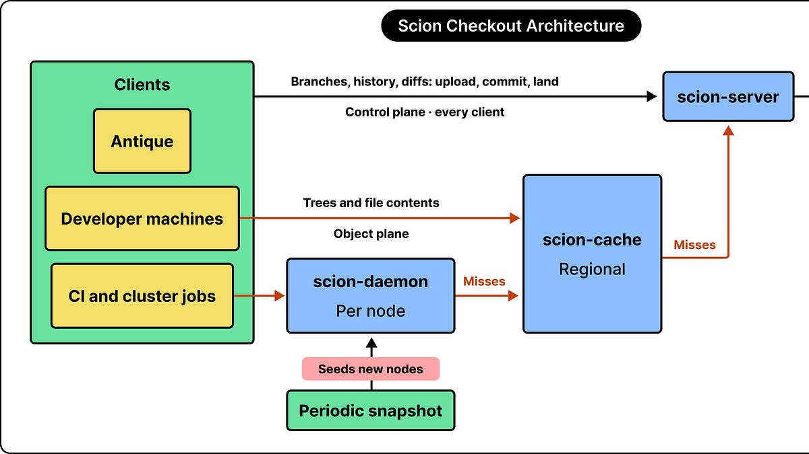
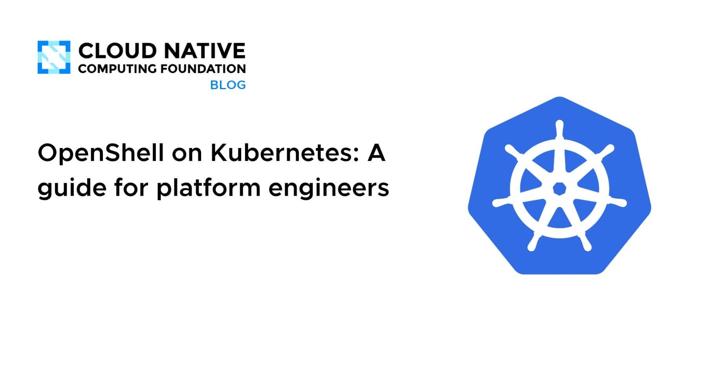
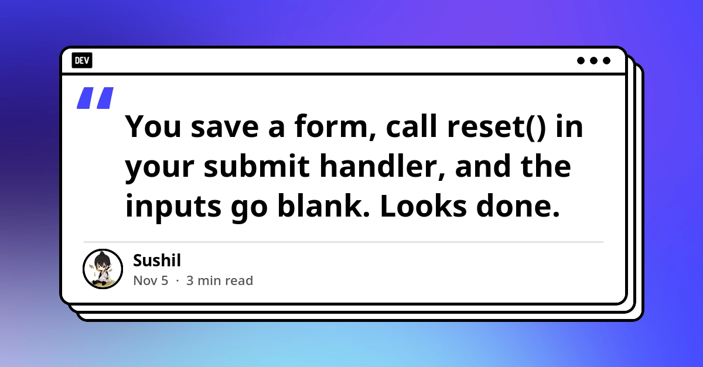
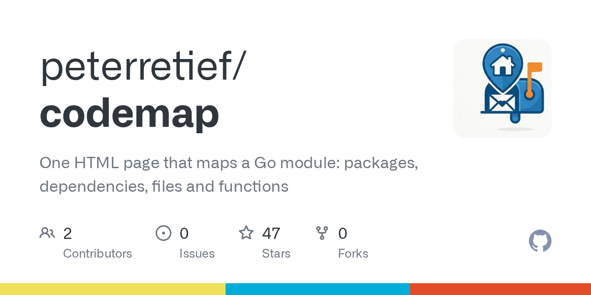

🔥 Top 3 (must read)
Ask HN: What's your current AI agentic setup?
A large Hacker News thread (144 points, 168 comments) where developers share the AI agent setups they use for real work. It is a broad, current snapshot of the tools and workflows people use today. Why it matters: it shows how other teams use coding agents, which helps when you set your own team's AI tooling and practices.
N
How Anthropic Redesigned Source Control
ByteByteGo looks at the architecture of Scion, Anthropic's redesigned source control system. It is a system design case study from a company whose engineers write a lot of code with agents. Why it matters: it is a system design study, and it touches developer tooling at scale, both on your interest list.

OpenShell on Kubernetes: A guide for platform engineers
AI agents do more than call APIs. They run shells, install packages, read files and open network connections, often based on text they just pulled from the internet. This CNCF guide shows platform engineers how to run OpenShell on Kubernetes to handle this. Why it matters: if your team lets coding agents run commands, this is a practical guide to running them safely on infrastructure you already know.

🛠 Tools & releases
reset() inside onSubmit only half-resets a React Hook Form
: the values reset, but the submission state does not. Users then see validation errors while they type into a "fresh" form.

🤖 AI for developers
Ship It Conversations: The AI Agent That Ran Terraform Apply
: a podcast interview with the CEO of Cloudgeni, which builds AI agents for cloud infrastructure. Topics: read-only cloud access, sandboxes beyond Docker, agentic PR reviews, the real cost of running agents, FinOps for AI, and why guardrails belong in the architecture, not the prompt.
R
🎯 For me
OpenShell on Kubernetes guide
The agent safety theme fits your DevOps and EM interests well. Read the together with the Ship It episode. Its core idea is "permissions over prompts".
reset() article
If your React frontends use React Hook Form, the describes a small UX bug that is easy to ship by mistake.
💡 App ideas & indie builds
PC Deal Check
(HN): prices a pre-built PC part by part. Problem: buyers cannot tell if a pre-built PC is a fair deal. Inspiration: break a bundled product into its parts so a hidden price becomes clear. This works for many bundle markets.
P
Codemap
(HN): a one-page interactive map of any Go repository. Problem: new people get lost in a codebase they do not know. Inspiration: a similar tool for TypeScript or Flutter repos could help onboarding.

Wing Commander co-op
(HN): after ten years of reverse engineering, the author added co-op multiplayer to the DOS game Wing Commander. Problem: fans of old single-player games want to play them together. Inspiration: a long-term passion project, and it adds a modern feature to old software people still love.
F
🎓 Try this
Search your React codebase for
reset() calls inside onSubmit handlers. Compare them with the React Hook Form reset() write-up to find forms that keep their old submission state after a save.